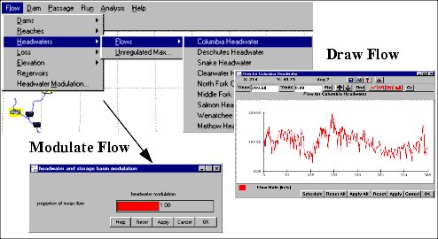

Flows
Selecting a Headwater from Flow HeadwaterFlows opens a window for setting flows for the selected headwater for Scenario Mode runs. Headwater flows are specified on a daily basis. These are combined at confluences to produce flows through all segments of the river system. Flows at dams are determined by input flows specified at the headwater and losses over intervening reaches. You can change the headwater flows or the reservoir losses, but not the flow at the dams.
HeadwaterFlows opens a window for setting flows for the selected headwater for Scenario Mode runs. Headwater flows are specified on a daily basis. These are combined at confluences to produce flows through all segments of the river system. Flows at dams are determined by input flows specified at the headwater and losses over intervening reaches. You can change the headwater flows or the reservoir losses, but not the flow at the dams.
The mode used to run COMPASS determines how headwater flow is created. In Scenario Mode, flows can also be randomly set by using the Headwater Modulation function. In Monte Carlo Mode, headwater flows can be calculated from flows at the dams as input by the flow.archive file.
This is an Editable Graph window.

Flow Submenus